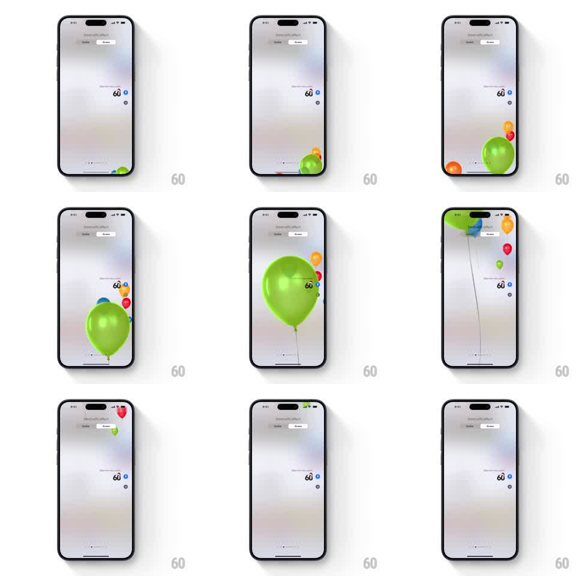

Media
Frame-by-frame

Rebuild this animation 1:1: Apple Messages' Balloons screen effect - a bunch of colorful balloons floats up from the bottom of the screen on strings, rising past the conversation in a loose, staggered cluster.

Rebuild this animation 1:1: Apple Messages' Balloons screen effect - a bunch of colorful balloons floats up from the bottom of the screen on strings, rising past the conversation in a loose, staggered cluster. ## Integration Integration: stack-agnostic spec - springs given as stiffness/damping, timed motions as duration + curve; map every value to your framework and animation library of choice. ## Scene The Messages "Send with effect" preview on the bright conversation: the sent bubble sits at the right. Balloons - green, orange, blue, red, yellow - enter from the bottom edge with strings dangling, one large green balloon leading at center-right, the rest staggered around it, all rising until they exit the top. ## Motion spec Pattern: rising balloon bunch, ~5s total. - Balloons enter from the bottom over 1.5s, staggered 150 to 300ms apart, the large green one first. - Each balloon rises at its own speed (2.5 to 4s to cross) with a lazy horizontal sway (plus/minus 25px sine, 1.5 to 2.5s period) and a slight tilt into the sway (plus/minus 5 degrees), strings lagging behind with their own pendulum swing. - Sizes vary: one large hero balloon, the rest 0.4x to 0.7x, layered in front of and behind each other. - Each balloon is glossy: specular highlight upper left, knot and string at the bottom. - The last balloons exit the top edge; the conversation stays bright throughout. ## Calibration - The bunch stays loosely grouped - staggered but never scattered to the corners. - Strings always trail downward with swing; they never stick straight. ## Reduced motion Balloons fade in mid-screen and fade out rising. ## Don't miss - Balloons pass in front of the conversation, including the bubble. - The leading green balloon is much larger than the rest - it anchors the bunch.